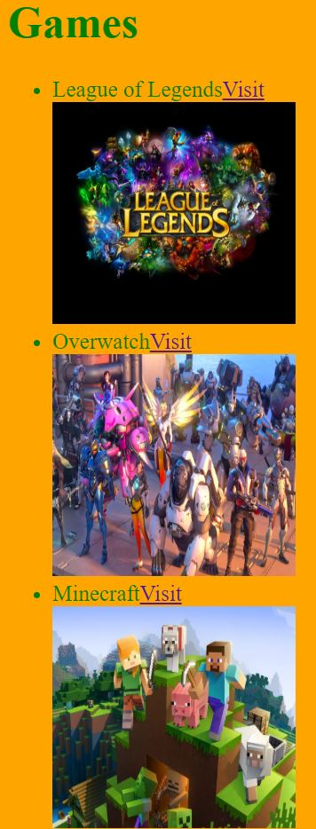
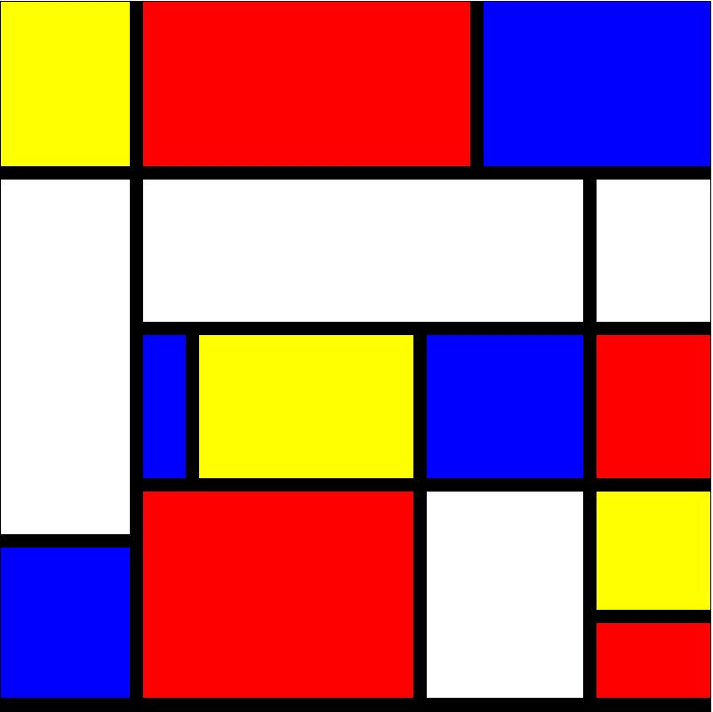

- Home
- Projecten
- Contact
- Over mij
- Nieuws
- Vaardigheden
- Github

Project 1
Dit was mijn allereerste ervaring met Html.
Ik vondt het nog lastig, maar door het te oefenen en blijven doorgaan met programmeren lukt het me gewoon.

Project 2
Dit was één van mijn moeilijkste ervaringen met Html. Ik heb de Piet Mondriaan kunstwerk gemaakt.
Het programmeren ervan was niet makkelijk. Het waren een hoop ingewikkelde figuren in.

Project 3
Deze site is mijn eerste project. Hierin heb ik al mijn ervaringen met Html, Javascript en Css verwerkt.
En ik ben trots op mijn eindresultaat.